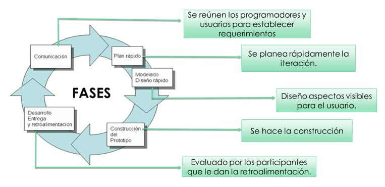

La metodología incremental es un modelo de desarrollo de software basado en la creación del sistema por partes o incrementos. Cada incremento agrega nuevas funciones al proyecto hasta completar el producto final.
Esta metodología permite entregar versiones funcionales del sistema durante el desarrollo, facilitando las pruebas, mejoras y la adaptación a nuevos requerimientos.
